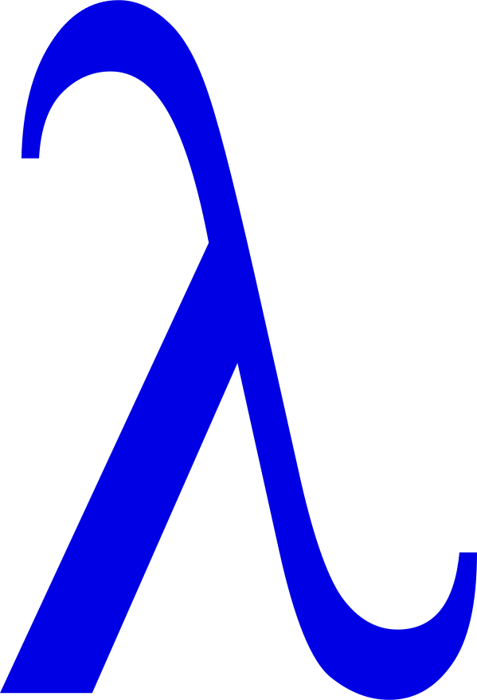
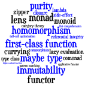

Katie Miller (@codemiller) & Steve Dalton (@spidie)

Think functionally, code like a hacker— Erik Meijer, YOW! 2012
Learning Haskell will make you a better Java programmer ... it will rewire your brain in a way that will make you write better Java programs— Simon Peyton Jones, YOW! 2011